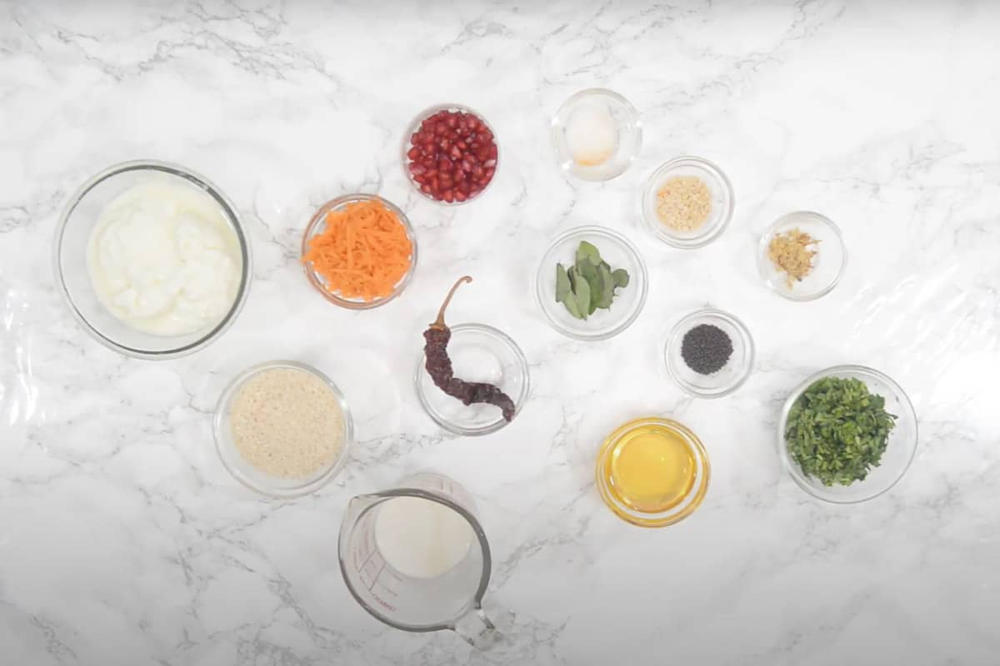
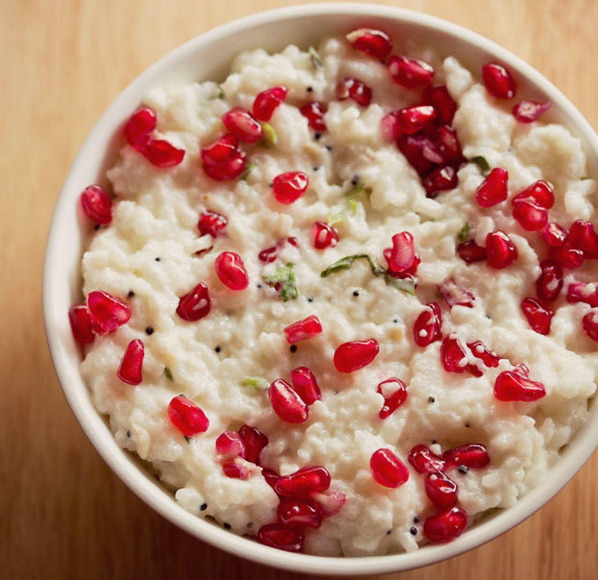

Curd rice, also known as "Thayir Sadam" in Tamil, is a traditional South Indian dish that holds a special place in the region's culinary heritage. Originating from the southern states of India, particularly Tamil Nadu, Karnataka, Andhra Pradesh, and Kerala, curd rice has evolved into a staple comfort food enjoyed across the country. The history of curd rice dates back centuries, with its roots deeply embedded in South Indian culture. It is believed that curd rice was a common part of the daily diet in ancient South India due to its simplicity, easy preparation, and the availability of rice and curd. Over time, the dish became not only a dietary mainstay but also a symbol of South Indian identity. Curd rice is made by mixing cooked rice with yogurt and then seasoned with a tempering of mustard seeds, urad dal (black gram), curry leaves, green chilies, and sometimes ginger. The use of yogurt not only imparts a unique tangy flavor but also adds a creamy texture to the dish. In some variations, grated carrots, pomegranate seeds, or finely chopped coriander are added to enhance the visual appeal and nutritional value. The taste of curd rice is a delightful blend of cooling curd, the mild sweetness of rice, and the aromatic flavors from the tempering. The dish is not only delicious but also soothing, making it a popular choice, especially during hot summers in South India. Beyond its taste, curd rice is known for its digestive properties, and it is often recommended as a part of a balanced meal.
Curd Rice Recipe

Ingredients Required
1) For Cooking Rice
½ cup rice - 100 grams, any short grained to medium-grained rice
1.5 cups water - for pressure cooking
2) Other Ingredients
1 cup Curd (yogurt) - 250 grams
¼ cup milk - optional
1 green chilli chopped or ½ teaspoon
1 teaspoon ginger - finely chopped
1 teaspoon curry leaves - finely chopped or 4 to 5 curry leaves, chopped
1 tablespoon coriander leaves (cilantro), chopped
3) For Tempering
1 tablespoon sesame oil (gingelly oil)
½ teaspoon mustard seeds
½ teaspoon urad dal (husked and split black gram dal) - optional
5 to 6 curry leaves - chopped or kept whole
⅛ teaspoon asafoetida (hing)
4) For Garnish
1 to 2 tablespoons pomegranate arils - optional, sweet grapes can also be added instead
1 tablespoon coriander leaves - chopped
Instructions

1) Cooking Rice
Rinse the rice grains a couple of times in water. Then add the rice in a 2-litre stovetop pressure cooker.
Add 1.5 cups water. Stir and mix very well.
Pressure cook rice on medium heat for 5 to 6 whistles or 8 to 9 minutes till the rice is cooked and softened very well.
When the pressure settles down on its own, remove the lid and check the doneness of rice. The rice has to be more softer than what we cook on a daily basis and look mushy.
With a spoon or vegetable masher, mash the rice. Close the cooker and allow the rice to become lukewarm or come at room temperature.
2) Making Curd Rice
When the rice becomes comes at room temperature and has completely cooled, add fresh curd and milk.
Mix again very well and break lumps if any. You can either use the spoon or masher while breaking the lumps.
Add finely chopped ginger, finely chopped curry leaves, chopped green chilies and chopped coriander leaves.
Instead of adding ginger and curry leaves to the rice, you can also fry them in the tempering.
Add salt. Mix very well. Keep aside.
3) Tempering
Heat a small pan or tadka pan and add sesame oil in it. You can use peanut oil or sunflower oil instead of sesame oil.
When the oil becomes hot, lower the heat. Add mustard seeds.
Let the mustard seeds crackle.
Then add urad dal. Urad dal is optional and can be skipped.
Fry on a low heat stirring often till the urad dal becomes golden.
Lastly add the add curry leaves and asafoetida. Mix very well.
Switch off the heat and immediately pour the tempering in the curd rice mixture. Again mix very well.
Serve Curd Rice topped with a few coriander leaves or pomegranate arils or grapes. You can skip the fruits too and just serve curd rice as is. You can also serve with fried sun dried green chillies or any South Indian mango pickle.
Store any leftovers in the refrigerator for some hours. Better to eat on the same day.
 South Indian Recipes
South Indian Recipes Curd rice, also known as "Thayir Sadam" in Tamil, is a traditional South Indian dish that holds a special place in the region's culinary heritage. Originating from the southern states of India, particularly Tamil Nadu, Karnataka, Andhra Pradesh, and Kerala, curd rice has evolved into a staple comfort food enjoyed across the country. The history of curd rice dates back centuries, with its roots deeply embedded in South Indian culture. It is believed that curd rice was a common part of the daily diet in ancient South India due to its simplicity, easy preparation, and the availability of rice and curd. Over time, the dish became not only a dietary mainstay but also a symbol of South Indian identity. Curd rice is made by mixing cooked rice with yogurt and then seasoned with a tempering of mustard seeds, urad dal (black gram), curry leaves, green chilies, and sometimes ginger. The use of yogurt not only imparts a unique tangy flavor but also adds a creamy texture to the dish. In some variations, grated carrots, pomegranate seeds, or finely chopped coriander are added to enhance the visual appeal and nutritional value. The taste of curd rice is a delightful blend of cooling curd, the mild sweetness of rice, and the aromatic flavors from the tempering. The dish is not only delicious but also soothing, making it a popular choice, especially during hot summers in South India. Beyond its taste, curd rice is known for its digestive properties, and it is often recommended as a part of a balanced meal.
Curd rice, also known as "Thayir Sadam" in Tamil, is a traditional South Indian dish that holds a special place in the region's culinary heritage. Originating from the southern states of India, particularly Tamil Nadu, Karnataka, Andhra Pradesh, and Kerala, curd rice has evolved into a staple comfort food enjoyed across the country. The history of curd rice dates back centuries, with its roots deeply embedded in South Indian culture. It is believed that curd rice was a common part of the daily diet in ancient South India due to its simplicity, easy preparation, and the availability of rice and curd. Over time, the dish became not only a dietary mainstay but also a symbol of South Indian identity. Curd rice is made by mixing cooked rice with yogurt and then seasoned with a tempering of mustard seeds, urad dal (black gram), curry leaves, green chilies, and sometimes ginger. The use of yogurt not only imparts a unique tangy flavor but also adds a creamy texture to the dish. In some variations, grated carrots, pomegranate seeds, or finely chopped coriander are added to enhance the visual appeal and nutritional value. The taste of curd rice is a delightful blend of cooling curd, the mild sweetness of rice, and the aromatic flavors from the tempering. The dish is not only delicious but also soothing, making it a popular choice, especially during hot summers in South India. Beyond its taste, curd rice is known for its digestive properties, and it is often recommended as a part of a balanced meal.